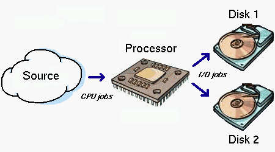
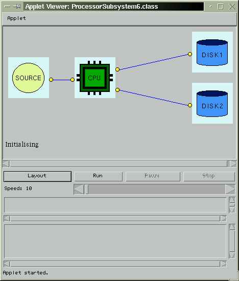
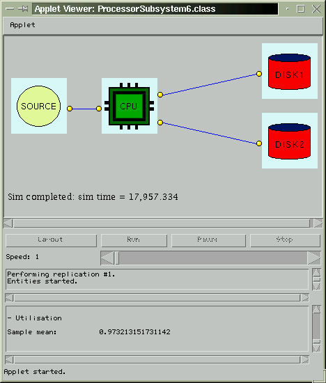
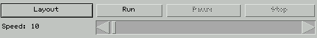
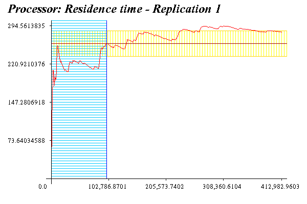
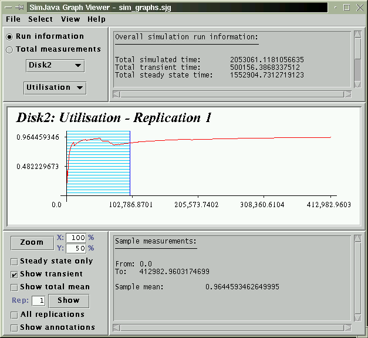

Contents:
1. Introduction
1.1. What is SimJava?
SimJava is a discrete event, process oriented simulation package. It is an API that augments Java with building blocks for defining and running simulations. The original SimJava was based on HASE++, a C++ simulation library. HASE++ was in turn based on SIM++.
The approach to simulating systems adopted by SimJava is similar to other process based simulation packages. Each system is considered to be a set of interacting processes or entities as they are referred to in SimJava. These entities communicate with each other by passing events. The simulation time progresses on the basis of these events.
As of version 2.0, SimJava has been augmented with considerable statistical and reporting support. The modeller has the ability to add detailed statistical measurements to the simulation's entities and perform output analysis to test the quality of the collected data. Furthermore much effort has gone into the automation of all possible tasks allowing the modeller to focus on the pure modelling aspects of the simulation. Automated tasks range from seeding the random number generators used in the simulation, to producing detailed and interactive graphs.
1.2. Where to find SimJava
SimJava 2.0 can be downloaded from here.
1.3. How to setup SimJava
To use SimJava 2.0 the downloaded zip file needs to be extracted. A readme file is present in
the archive with instructions on compiling and running simulations. Essentially however, all
that is required to use SimJava 2.0 is to include its classes in the classpath. Note that either
the jar files in the jars directory can be included in the classpath, or the class
files in the classes directory.
2. Getting started
2.1. A simple example
Throughout this tutorial a simple example will be built up. This example will serve to demonstrate in practice each concept discussed. Code snapshots will be presented with every new topic.
The system presented in the example will be a simple processor-disk sub-unit of a computer system. The actual system consists of a processor whose task is to process jobs and then schedule an I/O job to one of two disks. Which disk is selected will be decided by probabilities assigned to each disk. Possible motivations to simulate such a system could be to examine the system's performance if a component is substituted with another one, with different service characteristics. In real life, the cost of selecting e.g. a better, faster disk or adding a new one could be examined against the resulting performance increase in order to make decisions.

The system we will simulate as an example
2.2. Defining entities
Before actually writing any code, the modeller must break the system under study into entities. Some entities may be obvious and as such defined easily. However, others may require examining the system in depth and may not even correspond to "entities" in the actual system. On the other hand what may originally be considered for the simulation may need to be dropped in favor of abstraction. It is always a good idea to abstract away as much as possible since too much detail will surely burden the modeller. Furthermore, it should always be taken into consideration that simulations are complex programs that are usually quite harsh on the system's resources. Too much detail will lead to simulations that will take a long time to complete.
In our simple example the prime candidates for becoming entities are obviously the processor and the two disks. The processor would keep the two disks busy by scheduling I/O requests to them. However this leads to the question of how will the processor be activated. This leads to the introduction of another entity, the source, that will represent the external environment and whose task will be to create jobs for the processor.
In SimJava, entities are represented by the class Sim_entity. This class encapsulates
all the functionality that should be available to entities in the simulation. For the modeller to
define an entity, or rather an entity type, he must subclass Sim_entity. The subclass
will then be implemented to contain the entity's desired behaviour. This behaviour is provided by
means of the body() method which must be overriden in the subclass.
The constructor of this subclass must also be provided in which all initialisation takes place.
This is the place where the Sim_entity superclass is called and also where ports,
sample generators and a statistical gatherer are defined. Ports are the means by which entities
communicate with each other by scheduling events. Ports are always considered in pairs since a
port in one entity will always have a matching port in another. Each port may only have one other
port as its destination, but a port on the recipient's end may be linked to any number of source
ports. Ports are represented by instances of Sim_port and are added to their entity
using the add_port() method. The simulation's ports will be linked using Sim_system,
the simulation's kernel. Statistics gatherers (Sim_stat objects) and sample generators will
be discussed further on.
Returning to our example, three subclasses will be made of Sim_entity. Class Source
to represent the source entity, class Sink to represent the processor, and class
Disk to represent each disk. Class Source will be implemented as follows:
import eduni.simjava.*; // Import the SimJava basic package
class Source extends Sim_entity {
private Sim_port out;
Source(String name) {
super(name); // Call the constructor of Sim_entity
out = new Sim_port("Out"); // Create the port
add_port(out); // Add the port to the entity
}
...
}
Note that the constructor is passed a String argument that represents the entity's name. This
name must be unique since it serves to identify entities and refer to them during the simulation. The other
classes are similarly defined.
The import statement at the top imports the eduni.simjava package. This is the package that
contains the basic simulation classes that are required in our example.
2.3. Specifying an entity's behaviour
After deciding which entities are to be present within the simulation we have to specify their behaviour. In
the previous section subclasses of Sim_entity were made and their constructors were implemented
to instantiate their ports. At this point we need to override the body() method to provide the
entities' behaviour. Before we undertake this for our example we should consider what would constitute an
entity's behaviour.
As previously mentioned, entities interact by sending each other events. This means that some entities must generate events and schedule them to their recipients. On the other hand, the receiving entities need to somehow listen for incoming events. In addition to simply sending and receiving events, entities may spend time being busy without interacting with other entities. While entities are busy they may still be sent events. These events need to be differentiated from future events. For this reason each entity could be considered as having two event queues: The future queue holding all the events that have been generated by entities but whose delivery time has not yet been reached, and the deferred queue that holds all the events received by entities who were busy at the time they were delivered. Entities may desire to either wait until a future event arrives or check their deferred queue to process waiting events. All this behaviour is modelled through SimJava's runtime methods.
SimJava's runtime methods can be separated into 5 major families. The first family consists of the event
scheduling methods sim_schedule(). These methods all require the modeller to specify the
event's destination, a delay after which the event should be delivered, and a tag value which serves as
an event type identifier. Variations of this method are available with which the event's destination can
be specified either by the recipient's id or the port through which the event is sent. In the last case, the
port can be identified either by supplying its name or the port instance itself. These three variations of
the sim_schedule() method have two modes. The first schedules an empty event and the second
allows for data, in the form of a Java Object, to be passed to the recipient.
When an event is received by its recipient it is received as a Sim_event object. Through
this object's accessor methods all the event's parameters are available for inspection such as its sender,
its attached data, or the port from which it was delivered to the recipient. The event's tag is also
accessible through a relevant accessor and can be used to act according to the event's type. Furthermore,
the event's tag can be used in a Sim_predicate object. These objects act as predicates with
which events can be selectively waited for. More detail on predicates is available in a following section.
The next method family provides methods that are used to wait for a future event. Two types of wait methods are available:
The sim_wait() method: This method is used to wait indefinitely for any event.
The sim_wait_for() methods: These methods are also used to wait for events but
provide added functionality. Depending on the method selected, the entity can wait for an
event of a specific type or alternatively wait for any event or until a time period expires.
Furthermore, a combination of these two variations is possible enabling the entity to wait
for a specific event or until the time period expires.
Wherever an event of a specific type is waited for, a suitable predicate is used. Predicates are also similarly used in the other related runtime methods.
Since an entity may be busy when an event arrives it may have to be placed in its deferred queue. Such events will not be returned with the waiting methods described above. Entities will desire however to check their deferred queue for the events they "missed". This is accomplished with the third family of methods that are used to check an entity's deferred queue. These methods come in several flavours:
sim_waiting() methods: These methods are used to check an entity's deferred queue
and return the number of events waiting. Two variations exist, one that checks for events of
any type and one that checks for events whose tags match a given predicate.
The sim_select() method: This method is used to select the first event from the
deferred queue that matches a given predicate.
sim_get_next() methods: These methods are a combination of the sim_waiting(),
sim_select() and sim_wait() methods. Two variations exist. The first one
checks the deferred queue for any waiting event and only if one is not found, waits for the next
event arrival. The second variation searches the deferred queue for an event whose tag matches a
specific predicate. Again, if no event is found, the entity will wait for the next event that will
match the predicate.
The next two method families are concerned with what the entity does when it is not scheduling an event or waiting for one to arrive. An entity in such a state may either remain inactive or paused, or alternatively be busy processing. The reason for differentiating between these two cases is for the purpose of statistical measurements and for modelling clarity. The time for which an entity is busy processing will count towards its utilisation. The time that an entity is paused will not.
The methods for processing come in three forms:
The sim_process() method: This method sets an entity to be busy processing for a certain
time period.
sim_process_for() methods: These two methods set the entity to be processing for a given
time period or until an event arrives. The first variation of the method allows any event to interrupt
the processing, and the second one only an event whose tag matches a given predicate.
sim_process_until() methods: These two methods set the entity to be processing until an
arrival occurs. The difference with the sim_process_for() methods is that no maximum time
limit for the processing is specified. Again two variations of the method are available, one for any
event and one for an event whose tag will match the given predicate.
The method family for setting an entity to be paused consists of the:
sim_pause() method.
sim_pause_for() methods.
sim_pause_until() methods.
The use of these methods is identical to the respective process methods except for the fact that time spent in paused state does not count towards the entity's utilisation. More on the entities' utilisation and other statistical measurements will be discussed in a following section.
Several minor runtime methods are also available with the most important ones being the sim_cancel()
method and the sim_completed() methods. The sim_cancel() method is used to delete
the first event found in the future queue that was sent by the entity and matches a given predicate. The
sim_completed() method is used to signal when an event is considered to have completed all service
at an entity. This method must be called for all events that are processed by the entity in order to update
relevant measurements and conditions in Sim_system.
After describing the runtime methods available to entities we can proceed to implement the behaviour of the entities in our example. The source entity will generate a job for the processor entity every 50 time units until 100 jobs have been generated. The processor will wait for jobs and once one is received it will proceed to process it for 30 time units. Following this processing it will create an I/O job for one of the two disks. We are not going to use at this point probabilities for the I/O job scheduling since this would involve a sample generator which will be covered in a following section. At this point we are going to distribute the work evenly to the two disks depending on the number of I/O requests generated up to that point. Odd jobs will go to the first disk and even ones to the second. Each disk upon receiving an I/O job will require some seeking time. For the first disk this will be 60 time units and for the second one 110 time units. The code for each entity follows:
// The class for the source
class Source extends Sim_entity {
private Sim_port out;
private double delay;
Source(String name, double delay) {
super(name);
this.delay = delay;
// Port for sending events to the processor
out = new Sim_port("Out");
add_port(out);
}
public void body() {
for (int i=0; i < 100; i++) {
// Send the processor a job
sim_schedule(out, 0.0, 0);
// Pause
sim_pause(delay);
}
}
}
// The class for the processor
class Sink extends Sim_entity {
private Sim_port in, out1, out2;
private double delay;
Sink(String name, double delay) {
super(name);
this.delay = delay;
// Port for receiving events from the source
in = new Sim_port("In");
// Port for sending events to disk 1
out1 = new Sim_port("Out1");
// Port for sending events to disk 2
out2 = new Sim_port("Out2");
add_port(in);
add_port(out1);
add_port(out2);
}
public void body() {
int i = 0;
while (Sim_system.running()) {
Sim_event e = new Sim_event();
// Get the next event
sim_get_next(e);
// Process the event
sim_process(delay);
// The event has completed service
sim_completed(e);
if ((i % 2) == 0) {
// Even I/O jobs go to disk 1
sim_schedule(out1, 0.0, 1);
} else {
// Odd I/O jobs go to disk 2
sim_schedule(out2, 0.0, 1);
}
i++;
}
}
}
// The class for the two disks
class Disk extends Sim_entity {
private Sim_port in;
private double delay;
Disk(String name, double delay) {
super(name);
this.delay = delay;
// Port for receiving events from the processor
in = new Sim_port("In");
add_port(in);
}
public void body() {
while (Sim_system.running()) {
Sim_event e = new Sim_event();
// Get the next event
sim_get_next(e);
// Process the event
sim_process(delay);
// The event has completed service
sim_completed(e);
}
}
}
You should have noticed in the above code the method Sim_system.running(). This method should
be used by all entities that exhibit a looping behaviour. The source entity uses a for loop
since it will only generate 100 events. Since this entity knows exactly when it should terminate it can
avoid using Sim_system.running(). The processor and the disks could have used a loop in
which they checked a counter but it is preferable for clarity and correctness to use the
Sim_system.running() method.
2.4. Setting up the simulation
Now that we have fully defined our entities and their behaviour we can proceed to setup the simulation itself.
The simulation is managed by Sim_system, a static class which will be setup in our
main() method. To define the simulation's main() method we will create
one further class. The name given to this class should be representative of the system being simulated
and also be given to the file containing all the classes.
In this simple simulation four steps are required:
Sim_system.
Much more functionality is available through Sim_system which will be covered in following sections.
At this point the example simulation could be characterised as being pointless since no output is being
produced and no animation is present. Remember however that this is only a test simulation that will serve
as the backbone onto which we will add detail and functionality as the tutorial continues.
The final class for our example follows:
public class ProcessorSubsystem {
// The main method
public static void main(String[] args) {
// Initialise Sim_system
Sim_system.initialise();
// Add the source
Source source = new Source("Source", 50);
// Add the processor
Sink processor = new Sink("Processor", 30);
// Add disk 1
Disk disk1 = new Disk("Disk1", 60);
// Add disk 2
Disk disk2 = new Disk("Disk2", 110);
// Link the entities' ports
Sim_system.link_ports("Source", "Out", "Processor", "In");
Sim_system.link_ports("Processor", "Out1", "Disk1", "In");
Sim_system.link_ports("Processor", "Out2", "Disk2", "In");
// Run the simulation
Sim_system.run();
}
}
At this point we have built our first running simulation. The code for the simulation up to this point is available here.
3. Using predicates
3.1. What are predicates?
In the previous section predicates were mentioned in connection with an entity's runtime methods. We saw that all of the main method families apart from the event scheduling methods, have method variations that make use of predicates.
Predicates are conditions that are used to select events. They can be used either to select events
already present in the entity's deferred queue, or used to selectively wait for future events that
match the given predicate. All predicates are implemented as classes that need to be instantiated and
used in related methods. These classes are all subclasses of Sim_predicate to preserve
uniformity in runtime methods. Three main types of predicates are available:
Two kinds of general predicates are available to the modeller: select any event (class Sim_any_p)
and select no event (class Sim_none_p). These predicates always remain the same in their definition
and as such are available as constants by Sim_system: SIM_ANY and
SIM_NONE. The modeller does not have to make new instances of their classes to use these
predicates. Note that SIM_ANY is the default predicate used in relevant runtime methods when
no one is explicitly provided by the modeller.
Event tag predicates are used to select an event on the basis of its tag. Two classes are available for such
predicates, Sim_type_p for selecting events that match a tag, and Sim_not_type_p
for selecting events that don't match a tag. In both cases a predicate object may also be instantiated by
specifying a set of tags. In the first case an event will be selected if its tag matches any specified
tag, and in the second case it will be selected if it differs from all the tags.
Source entity predicates are very similar to the ones based on event tags. In this case however what is
checked is the source entity of the event. Two classes are available, Sim_from_p and
Sim_not_from_p used to select events that originated from an entity (Sim_from_p),
or did not originate from an entity (Sim_not_from_p). Similar variations are available that
check any number of source entities as in the event tag predicate classes. The source entities are specified
by their unique id numbers. The id of an entity may be obtained with the
Sim_system.get_entity_id() method.
3.2. How to use predicates
To use a predicate the modeller needs to make an instance of the desired predicate and pass it to a runtime method. We have seen such methods for waiting, processing and pausing that have variations for defining predicates. In our example we don't have much need for predicates since each entity receives events from only one other entity. Furthermore, all the events received by each entity have the same type. Simply for demonstration purposes we will use a predicate in the processor entity to specify that it should only accept events from the source entity:
class Sink extends Sim_entity {
...
public void body() {
...
while(Sim_system.running()) {
Sim_event e = new Sim_event();
// Accept events only from the source entity
sim_get_next(new Sim_from_p(Sim_system.get_entity_id("Source")), e);
...
}
}
...
4. Generating trace
4.1. What is the trace of a simulation?
Simulations are often quite complex programs. Whenever complexity is added to any program the number of errors present is bound to increase. After building a simulation it is always good practice to test it before fully instrumenting it with statistical measures and exhaustively running it. A tool that is very useful in a simulation's debugging process (also known as verification) is the simulation's trace. The trace is essentially internal information that is made available to the modeller through which the exact actions within the simulation can be examined. Such an examination could lead to the discovery of undesired entity behaviour which would require the simulation's modification.
4.2. How to generate trace
In SimJava all the trace produced is printed out into a file (sim_trace) that is made
available to the modeller once the simulation completes. Three types of trace are provided: the
default trace, the entity trace, and the event specific trace. The default trace is basically all the
information that can be provided concerning the events that are processed by Sim_system.
Whenever an event is scheduled, received, cancelled etc., the trace file is updated. Furthermore, trace
is generated when an entity starts to exhibit some behaviour (e.g. processing).
The entity trace is produced by the modeller by modifying the entities to produce trace output.
This is accomplished through the sim_trace() method in which the user supplies the message
to be added to the trace file. The level of entity trace that is added to the trace file can be
managed by calling the set_trace_level() method of Sim_system. This method
is passed an integer that is used as a bit mask for checking the level of each entity trace statement.
The level of each trace message is passed along with the message in the sim_trace() method.
If the result of system-level AND message-level is not 0 then the message
is added to the trace file.
The event specific trace is identical, in content, to the default trace. The difference here is that
trace will only be produced for events that have been specified to be of interest. The purpose of this
is to allow the modeller to focus on specific event types and not be overwhelmed with the amount of the
entire default trace. The modeller may specify event tags that are of such interest with the
track_event() or track_events() methods.
In order to set the detail of the trace file the set_trace_detail() method is used. The first
flag of this method specifies whether or not to add the default trace. The second one concerns similarly
the entity trace and the third one the event specific trace. It should be obvious that the flag for adding
or not the event specific trace is meaningful only if the default trace is switched off. The simulation's
trace may be switched off altogether by using the set_auto_trace() method. If none of these
methods are used the default is not to produce any trace. This is the case because in cases of large
experiments the trace file can grow to extremely large sizes and slow down the simulation.
In our example we are going to add entity trace through the processor. We are going to switch off the
default trace and use sim_trace() to add to the trace file information concerning which
disk was selected for I/O work:
...
class Sink extends Sim_entity {
...
public void body {
while (Sim_system.running()) {
...
if ((i % 2) == 0) {
sim_trace(1, "Disk1 selected for I/O work.");
sim_schedule(out1, 0.0, 1);
} else {
sim_trace(1, "Disk2 selected for I/O work.");
sim_schedule(out2, 0.0, 1);
}
...
}
}
}
...
public class ProcessorSubsystem {
public static void main(String[] args) {
...
// Include only entity trace
Sim_system.set_trace_detail(false, true, false);
Sim_system.run();
}
}
Here is a snippet of the trace file that will be produced:
...
u: Processor at 830.0: Disk1 selected for I/O work.
u: Processor at 880.0: Disk2 selected for I/O work.
u: Processor at 930.0: Disk1 selected for I/O work.
u: Processor at 980.0: Disk2 selected for I/O work.
...
At this point we should note that tracing takes a completely different meaning when animation is
involved. In animated simulations Sim_system does not produce any trace and the entity
trace assumes a strict format. The entity trace is used in this case to update animation parameters
and to display event schedulings.
5. Sampling distributions
5.1. Why is (good) sampling important?
In the simulation we have built up to this point we have used delays for the pausing and processing
of entities. The delay for each entity was a double value that was explicitly set by
the modeller when each entity was instantiated. In other words the delays in the simulation were
deterministic. It is almost impossible in real life to capture an entity's behaviour with deterministic
values. It is more suitable to describe an entity's performance characteristics by means of certain
distributions; sampling them to produce specific values for e.g. a disk's seek time. By using distributions
the real world is more accurately simulated since the entities' behaviour will be, as in the real world,
stochastic. A good example of the importance of non-determinism is a network router whose packet interarrival
times are far from deterministic.
In order to generate samples from a distribution a random number generator needs to be used. This generator
is sampled to produce a sample uniformly distributed between 0 and 1. Following
this, the uniform sample is modified to fit in the desired distribution. This process is called random
variate generation.
To be precise, the random number generators used in simulation packages are pseudorandom. This means that although a generator's output is statistically random, if it is setup in the same way at a later time it will produce the exact same sequence of samples. This is of great importance in simulation studies since without pseudorandomness experiments would not be repeatable. Furthermore, maintaining the exact same sequence of samples enables the modeller to focus on the effect of changes introduced to the system. If for example a modification to the simulation is made and different results are observed, this difference will be totally attributed to the modifications and not to the random samples used.
5.2. What are seeds and how should they be used?
In the previous section we mentioned that if the same generator is setup in the same way in two different experiments it will produce the exact same sequence of samples. Essentially "setting up" the generator means selecting its initial seed, a number that is used to generate the next sample from the generator. Two generators seeded with the same value will produce the exact same sequence of samples. In multiplicative linear congruential generators (MLCGs), such as the one used in SimJava, the seed value is modified while producing the next sample. This modified seed is then used to produce the next sample and is again modified. This process continues with each generated sample.
When a single random number generator is used in a simulation the task of seeding is straighforward. This however is rarely the case since in most simulations each entity will have its own distribution sample generator(s). A very common simulation error is to seed all the generators used with the same initial value. Such an action would introduce considerable correlation in the simulation since all the entities' sample sequences will be identical. This problem still persists even when the samples are modified to fit into different distributions.
An obvious solution to this problem would be to use an arbitrarily different seed for each generator in the simulation. This however would also possibly lead to the introduction of correlation. The reason for this is that once a generator is seeded it will produce a certain sequence of samples before looping and producing the same sequence. When arbitrary seeds are used however, the generators' sample cycles may overlap. If this occurs then we have again introduced correlation.
The problem of overlapping sample cycles could be solved if the generators were seeded in a way that was sure to produce well spaced sequences. However, it would be quite impractical for the modeller to store and use tables of "good" seeds for the generator used in the simulator. As such it would be best to allow the task of seeding to be carried out automatically without effort. A final point of consideration concerning generators is their cycle length since it would be undesirable for a generator to loop and start producing the same samples. In SimJava this does not pose a problem since each seed is guaranteed to produce 231-1 samples before looping.
5.3. Defining sample generators
Now that we have covered concepts regarding distributions and random number generators we can proceed
to discuss how to use them in SimJava. SimJava's support for defining and using distributions is
provided through the eduni.simjava.distibutions package. The random number generator is
available through the class Sim_random_obj. All distribution classes (Sim_*_obj)
internally use an instance of the generator to produce random variates to fit their specified parameters.
In all, 22 distributions (continuous and discrete) are available to the modeller and should cover most modelling
requirements.
If an entity requires a distribution it makes an instance of the desired distribution class and then uses
the sample() method whenever a sample is required. To instantiate a distribution class the
modeller needs to supply the generator with a name and the distribution's required parameters. Additional
constructors are available that allow expert modellers to explicitly seed each generator. If an error
is detected in the distribution's parameters a Sim_parameter_exception is thrown.
Apart from supplying each entity with a sample generator, the modeller has control over their seed sequences.
As mentioned in the previous paragraph, each distribution class comes with a constructor that allows the
modeller to explicitly set the seed for its underlying random number generator. This should be performed only
by expert modellers. The best way to use sample generators is to allow Sim_system to seed
them. This is accomplished when a constructor is used that does not contain a seed value. In this case the
generator will query Sim_system for the next seed that will guarantee a well spaced sequence
of samples. The modeller has control over the seeds that will be supplied to the generators through
Sim_system's set_seed_sequence() method. This method allows the modeller to
specify the original seed to be used to produce the rest as well as the desired sample spacing. The
set_seed() and set_spacing() methods can be used to define only the seed or
the sample spacing, respectively. If no such method is used and the generators are not explicitly seeded
the default values used are 4851 for the seed and 100000 for the sample spacing.
In our example we will proceed to substitute all the deterministically specified delays with distribution samples. The source's delay between job generations will be exponentially distributed with a mean of 150.45. The processing time for the processor will follow a normal distribution with mean 110.50 and variance 90.5. The seek time for the disks will also be normally distributed. The first disk's distribution will have a mean of 130.0 and a variance of 65.0 and the second disk's distribution will have a mean of 350.5 and a variance of 200.5.
In addition to the distributions to cover the service characteristics of each entity we will also make use of a uniform random number generator for the processor. This generator will produce samples which will be used to probabilistically select the disk to which each I/O job will be sent. 60% of the jobs will be sent to disk 1 and 40% to disk 2.
import eduni.simjava.*;
// Import the distributions
import eduni.simjava.distributions.*;
class Source extends Sim_entity {
private Sim_port out;
private Sim_negexp_obj delay;
Source(String name, double mean) {
super(name);
out = new Sim_port("Out");
add_port(out);
// Create the source's distribution and add it
delay = new Sim_negexp_obj("Delay", mean);
add_generator(delay);
}
public void body() {
for (int i=0; i < 100; i++) {
sim_schedule(out, 0.0, 0);
// Sample the distribution
sim_pause(delay.sample());
}
}
}
class Sink extends Sim_entity {
private Sim_port in, out1, out2;
private Sim_normal_obj delay;
private Sim_random_obj prob;
Sink(String name, double mean, double var) {
super(name);
in = new Sim_port("In");
out1 = new Sim_port("Out1");
out2 = new Sim_port("Out2");
add_port(in);
add_port(out1);
add_port(out2);
// Create the processor's distribution and generator and add them
delay = new Sim_normal_obj("Delay", mean, var);
prob = new Sim_random_obj("Probability");
add_generator(delay);
add_generator(prob);
}
public void body() {
while (Sim_system.running()) {
Sim_event e = new Sim_event();
sim_get_next(e);
// Sample the distribution
sim_process(delay.sample());
sim_completed(e);
// Get the next probability
double p = prob.sample();
if (p < 0.60) {
sim_schedule(out1, 0.0, 1);
} else {
sim_schedule(out2, 0.0, 1);
}
}
}
}
class Disk extends Sim_entity {
private Sim_port in;
private Sim_normal_obj delay;
Disk(String name, double mean, double var) {
super(name);
in = new Sim_port("In");
add_port(in);
// Create the disk's distribution and add it
delay = new Sim_normal_obj("Delay", mean, var);
add_generator(delay);
}
public void body() {
while (Sim_system.running()) {
Sim_event e = new Sim_event();
sim_get_next(e);
// Sample the distribution
sim_process(delay.sample());
sim_completed(e);
}
}
}
public class ProcessorSubsystem1 {
public static void main(String[] args) {
Sim_system.initialise();
Source source = new Source("Source", 150.45);
Sink processor = new Sink("Processor", 110.5, 90.5);
Disk disk1 = new Disk("Disk1", 130.0, 65.0);
Disk disk2 = new Disk("Disk2", 350.5, 200.5);
Sim_system.link_ports("Source", "Out", "Processor", "In");
Sim_system.link_ports("Processor", "Out1", "Disk1", "In");
Sim_system.link_ports("Processor", "Out2", "Disk2", "In");
Sim_system.run();
}
}
Note in the above code the add_generator() method. Each generator created should be added
to its entity. The reason for this will be explained in a following section. In this simulation we have
left the seeding up to Sim_system and have used the default root seed and sample spacing.
The code for the revised simulation is here.
6. Adding statistical measurements
6.1. Types of measures
In the simulations we have been building up to this point we have not included any form of output or measurement calculation. One could say that the simulations thus far have been fairly pointless (from a practical point of view) since nothing has been obtained from them. In this section we will discuss how to add statistical support to the entities and obtain useful measurements for performance evaluation.
The first step to adding statistical support to entities is to define measures of interest. Such measures could be for example a disk's utilisation or a processor's throughput. In order to understand how measures are defined we need to identify their possible types. These types will dictate how they are defined, updated, and used to produce measurements.
All measures can be classified into three categories:
Rate based measures are based on the occurence of an event over a period of time. When the sum of these events are taken into account along with the interval in which they occured a rate may be obtained. Such measures are for example an entity's throughput or loss rate. In the first case the event of interest is an event completing all service and in the second case, an event having been lost (according to a user defined condition).
State based measures reflect the entity's state over a period of time. An entity can be considered as being in one state for a certain interval and then being in another for another interval. A state based measure can be considered as continuous if the entity moves from one state to another in a continuous fashion. An example of this could be the entity's utilisation in which case the entity is either busy or not, moving seamlessly between these two states. A non-continuous state based measure does not have the characteristic of continuity. This means that each interval is not required to begin where the previous one ended but may begin at a later time. An example of such a measure could be computer with 3 CPU's that is interested on finding out which CPU is used the most.
Interval based measures usually have less to do with the entity itself and more to do with events that pass through it. Such measures reflect time intervals that were experienced by these events. Examples of such measures could be the waiting time or residence time of events at an entity.
6.2. Default and custom measures
After considering the general types that measures can assume we can proceed to discuss how they are used in SimJava. In SimJava a further classification of measures is made between default and custom measures.
Default measures are measures that can be considered for most simulations and have similar meanings. The
process of collecting observations for these measures remains uniform between different experiments.
The modeller does not need to specify explicitly when an observation needs to be collected for a measure
since Sim_system can automatically update it. This is done based on the internal processing
of events, automatically and transparently to the modeller. Default measures available for all SimJava
entities are:
Note that no default non-continuous state based measures are available. To use such measures the modeller
will need to define them as custom. All that is required from the modeller to get results for default
measures is to define them for entities of interest and them allow Sim_system to do all the
work.
Custom measures are measures that can't be considered in all simulations since their meaning is experiment
dependent. The main difference between custom and default measures is that the modeller needs to specify
some additional parameters upon their definition and explicitly update them. Since these measures' meaning
is experiment specific, the collection of observations can't be made automatically. Apart from this however,
Sim_system treats default and custom measures identically.
6.3. Measurements
Once a measure is defined all its measurements can be obtained. The measurements that are available for a measure depend on its type. For example no variance can be calculated for a rate based measure since for simple event occurences it has no meaning. The measurements that are available for each measure type are:
For rate based measures:
The sample average: The rate of event occurences.
The event count: How many events were observed in a given interval.
For state based measures (continuous and non-continuous):
The sample average: The average level based on the time spent in each state and the total time interval.
The sample minimum: The minimum level observed.
The sample maximum: The maximum level observed.
The sample variance: The variance of the collected observations.
The sample standard deviation: The standard deviation of the observations from their mean.
Exceedence proportions: These proportions represent the proportion of time spent above each level for a given set of levels.
For interval based measures:
The sample average: The average interval experienced by events.
The sample minimum: The minimum interval observed.
The sample maximum: The maximum interval observed.
The sample variance: The variance of the collected observations.
The sample standard deviation: The standard deviation of the observations from their mean.
Exceedence proportions: In this case these proportions reflect the proportion of events that experienced intervals above a certain level, for a given set of levels.
6.4. Defining measures for entities
All the statistical support is provided to entities through Sim_stat objects. Each entity
that requires measurements to be calculated for certain measures of interest needs to create a
Sim_stat object, set it up, and then add it.
Measures are defined through an add_measure() method. Variations of this method are available
that allow entities to define default and custom measures, as well as set up any relevant custom measure
parameters. The default measures are represented by static integer constants of Sim_stat.
Custom measures are identified by their unique names. These names are used to obtain measurements from them
while the simulation is running or at the simulation's end. Apart from supplying the custom measure's name,
the modeller needs to provide its type since this will dictate how it is updated and what measurements are
available for it. In the case of custom state based measures initial parameters may also be passed such as
a flag that defines the measure as continuous or not, and in the case of continuous measures, the initial
state the entity will be in.
Once a measure is defined, all measurements will be automatically calculated at the end of the simulation
and the results will be automatically added to the simulation's report file. The
report file for the simulation is covered in a following section. The only measurement that is not calculated
automatically are exceedence proportions for state and interval based measures. This is the case since the
levels that are to be used to generate these proportions need to be provided by the modeller. This is
accomplished with the calc_proportions() method. Several methods to obtain exceedence proportions
at runtime, as well as all the other measurements, exist, providing several variations for setting the time
period for the calculations.
At this point an additional method is made available to the modeller concerning the collection of observations
for default measures. This method is the measure_for() method that accepts as a parameter an
array of integer tags. These tags represent the event tags for which observations will be collected. An event
with a tag other than the ones specified will not be considered for the default measures. These tags do not
apply to custom measures since they are explicitly updated by the modeller using an update() method.
The reason for providing the measure_for() method is that not all events represent events of
statistical interest. Some events may be used as signal events and as such should not be included in
calculations. Furthermore, it is possible to have e.g. several classes of customers and the entity to be
interested only in one of them. The default, if the measure_for() method isn't used, is to
consider all events.
Which update() is used to collect an observation for a custom measure depends on the measure's type.
All variations require the first parameter to be the measure's name. In the case of rate based measures the
variation with two parameters is used, the second parameter being the time at which the observation occurred. For
non-continuous state based measures the update method with four parameters is used. The second parameter is
the state level, and the third and four parameters are the start and end time of the interval for which the
state was valid. For continuous state based measures, the variation with three parameters is used. The second
parameter is the new state level and the third parameter is the time at which the entity changed state.
Finally, in the case of interval based measures the variation with three parameters is also used. In this case
however, the second parameter is the interval's start and the third one is the interval's end. Note that
in all cases no measure can be updated past the current runtime. The current runtime is available through
the Sim_system.sim_clock() method.
All setup methods such as add_measure() are called on the Sim_stat instance
that has been created. Once all relevant calls are made the Sim_stat object is added to
the entity with the set_stat() method. Only one such object is available for each entity.
update() methods are used during the simulation run in the entities' body()
method.
In order to illustrate what we have discussed up to this point the tutorial's example will be augmented with statistical support. To be precise we will calculate the processor's throughput and average residence time. For each disk we will calculate the disk's utilisation as an indication of its load:
...
class Sink extends Sim_entity {
...
Sim_stat stat;
Sink(String name, double mean, double var) {
...
stat = new Sim_stat();
stat.add_measure(Sim_stat.THROUGHPUT);
stat.add_measure(Sim_stat.RESIDENCE_TIME);
set_stat(stat);
}
...
}
class Disk extends Sim_entity {
...
Sim_stat stat;
Disk (String name, double mean, double var) {
...
stat = new Sim_stat();
stat.add_measure(Sim_stat.UTILISATION);
set_stat(stat);
}
...
}
...
This is all that is required to calculate the desired default measures from entities. At the end of the simulation all the obtained measurements will be presented in the simulation's report file. Let's proceed now to add a custom non-continuous state based measure to the processor. This measure will be called thread use. The processor is now considered to have three "threads" any of which can be used to process incoming jobs. 15% of jobs will go to thread 1, 60% to thread 2, and 25% to thread three. Exceedence proportions will also be specified for this measure:
...
class Sink extends Sim_entity {
...
Sim_stat stat;
Sink(String name, double mean, double var) {
...
stat = new Sim_stat();
stat.add_measure(Sim_stat.THROUGHPUT);
stat.add_measure(Sim_stat.RESIDENCE_TIME);
stat.add_measure("Thread use", Sim_stat.STATE_BASED, false);
stat.calc_proportions("Thread use", new double[] { 0, 1, 2, 3, 4});
set_stat(stat);
}
public void body() {
while(Sim_system.running()) {
Sim_event e = new Sim_event();
sim_get_next(e);
double before = Sim_system.sim_clock();
sim_process(delay.sample());
sim_completed(e);
double p = prob.sample();
if (p < 0.15) {
stat.update("Thread use", 1, before, Sim_system.sim_clock());
} else if (p < 0.75) {
stat.update("Thread use", 2, before, Sim_system.sim_clock());
} else {
stat.update("Thread use", 3, before, Sim_system.sim_clock());
}
...
}
}
}
...
The code for the updated simulation can be found here. The report produced by this simulation can be seen here.
6.5. Efficiency or detail?
Note that in the previous section we discussed how observations are collected automatically for default
measures and how it is necessary to call an update() method to do this for custom measures.
You may have thought that in cases of long running sumilations with many entities and many measures the
amount of data will be overwhelming for the system's memory. In the case of extremely large simulations
this is true.
Collecting all the observations however does provide the maximum amount of information. This information is used in certain output analysis methods, as well as transient and termination conditions. Furthermore, when all the simulation's observations are available, the modeller is able to produce graphs and view them with the SimJava Graph Viewer. This is a major tool for assisting the modeller in making informed decisions based on the simulation's behaviour. This functionality is only available if all the observations are collected.
It is possible however that the modeller is not interested in obtaining this level of information from
the simulation. If this is the case he may specify some or all of the measures as efficient by using the
set_efficient() method. When measures are defined as efficient, observations are not stored
but are rather used to recalculate all the measure's measurements on the fly. In addition, a separate set
of measurement calculation methods are provided for efficient measures. Finally, concerning exceedence
proportions, only the proportions for the levels specified with the calc_proportions method
can be obtained (as opposed to any set of levels in detailed mode). Apart from these differences, the
process of defining and updating efficient measures is identical to that for default ones.
The restrictions that apply when using efficient measures are:
No measurements can be obtained for arbitrary time intervals.
No exceedence proportions can be obtained for arbitrary levels (other than those specified
in calc_proportions().
No sample variance or standard deviation can be calculated.
The batch means method of output analysis can't be used.
A termination condition based on the confidence interval accuracy of a measure can't be used if batch means is used as a variance reduction technique.
The minimum-maximum method for transient period identification can't be used.
No graphs can be produced for efficient measures.
The limitations stated above apply to concepts not covered yet. They will be re-presented in their corresponding sections.
Note however that it is possible to make combinations of measures since it is not required to set all the measures as detailed or as efficient. It would therefore be possible to have one main measure of interest for which all possible detail will be obtained. To supplement this measure, several secondary ones could be defined as well but be defined as efficient in order not to burden the system. Again, the batch means method could not be used but other functionality would be available for the detailed measure, such as graph generation.
In our simulation say that we were mainly interested in the disks' utilisation. We could define all the processor's measures as efficient to minimise their memory requirements:
...
class Sink extends Sim_entity {
...
Sink(String name, double mean, double var) {
...
stat = new Sim_stat();
stat.add_measure(Sim_stat.THROUGHPUT);
stat.add_measure(Sim_stat.RESIDENCE_TIME);
stat.add_measure("Thread use", Sim_stat.STATE_BASED, false);
stat.calc_proportions("Thread use", new double[] { 0, 1, 2, 3, 4});
stat.set_efficient(Sim_stat.THROUGHPUT);
stat.set_efficient(Sim_stat.RESIDENCE_TIME);
stat.set_efficient("Thread use");
set_stat(stat);
}
...
}
...
It is important to note that the set_efficient() call for a measure must be made after the
calc_proportions() method has been used for it (see for example thread use). The report file
produced by this simulation is identical to the one produced with fully detailed measures except for the
absence of the variance and standard deviation for state and interval based measures.
Finally, you should be made aware that there is one case where efficient measurements for an entity may differ to their detailed equivalents. This occurs with throughput, when a termination and/or transient condition have been defined based on the event completions of the entity. Even when this is the case, a discrepancy will only occur if several event completions are recorded at the time that marks the end of the transient period or the end of the simulation run. The reason for this is that specific events are used to drive efficient measures while time periods are used for detailed ones. As a result, the total event count may appear to be more for detailed measurements.
As a last note, even if this discrepancy does occur, it still presents correct results in either case. In the report file, along with its mean, each rate based measure also displays its total event count. As a result of this, the modeller is made aware of the event count that led to the mean obtained.
7. Defining transient and termination conditions
7.1. What is a transient condition?
Up to this point we have run our example simulation for 100 event schedulings by the source entity. This can be considered as the crude termination condition of our simulation. Since version 2.0 however, SimJava provides the ability to define a larger variety of sophisticated termination and transient conditions. The meaning of a termination condition is fairly straightforward: it is a condition that once satisfied, will terminate the simulation. What is the meaning, however, of a transient condition?
A transient condition is similar to the termination condition in the sense that once satisfied it will signify the end of a certain period. In the case of the termination condition, this period is the entire run length of the simulation. In the case of the transient condition it is the transient or warmup period.
Simulations are started off in an arbitrary starting state. In this starting state entities quite often exhibit a different behaviour compared to the behaviour they would have if the simulation progressed for a while. Once the bias of the system's original state is overcome, the system is considered to have entered steady state. In this state the entities' behaviour remains largely the same.
It is often the case that simulations are built to study the system only after it has warmed up i.e. reached steady state. This, for example is the approach used by Markovian modelling techniques that solve global balance equations to obtain the steady state probability distribution. The period of time from the beginning of the simulation up to the point that steady state starts is termed the transient or warmup period. The effects of this period should be discarded if steady state analysis is of interest. Alternatively, if the modeller is interested in a system's startup, the transient period should be included in calculations.
In simulations the transient period can't be mathematically identified. As such, the modeller needs to specify a condition after which steady state is considered to have been entered. This condition is termed here the transient condition. As previously mentioned the transient period may or may not be of interest in a certain experiment. As such a simulation may be provided or not with a relevant condition.
7.2. Defining a transient condition
As of version 2.0 the transient condition is managed centrally and automatically by Sim_system.
The modeller does not have to include any code in the definition of the entities to check whether or not
steady state has been reached. A transient condition is set using a set_transient_condition()
method when the simulation is being setup. Three types of transient conditions are available:
Event completions: The system is considered to have entered steady state after a number of event service completions at a given entity. To use this method the modeller needs to specify the entity of interest, an event tag to identify events counting towards the condition, and a number of event completions.
Elapsed time: In this case the transient period is explicitly identified as a time period from the beginning of the simulation. The modeller needs to provide a point in time after which the system is considered to have entered steady state.
The minimum-maximum method: This method allows Sim_system to attempt to automatically
locate the time at which the transient period has elapsed. To do this the modeller provides an
entity and one of its measures. The minimum-maximum method searches the given measure's observations
and decides that the transient period has elapsed once an observation is located that is neither the
minimum nor the maximum of the remaining observations. This method is quite crude and in most cases
fails to identify a long enough transient period.
None: In this last case, no transient condition is specified. This is used when transient analysis
is of interest and is the default when the set_transient_condition() method isn't used.
As previously mentioned, if a measure is defined as efficient the minimum-maximum method can't be used. Furthermore, it can;t be used if no termination condition has been specified or if the termination condition provided is based on a confidence interval's accuracy. In our example simulation we will define a transient period of 100000 simulated time units:
...
public class ProcessorSubsystem3 {
public static void main(String[] args) {
...
Sim_system.set_transient_condition(Sim_system.TIME_ELAPSED, 100000);
Sim_system.run();
}
}
7.3. Defining a termination condition
A termination condition is quite obviously the condition that once satisfied, terminates the simulation.
As in the case of transient conditions, since version 2.0, SimJava centrally holds and checks the
termination condition. A termination condition is defined in a similar way to the transient one by using a
set_termination_condition() method. The following termination condition types are available
to the modeller:
Event completions: Similar to the corresponding transient condition type. The modeller provides an entity and an event type tag, as well as the number of event completions. Once the number of specified events have completed the simulation will terminate.
Elapsed time: The termination time is explicitly set. The modeller provides a point in time that once reached, will terminate the simulation.
Confidence interval accuracy: A very useful termination condition. This termination condition tells
Sim_system to run until a measure's total mean has been calculated to a certain degree
of accuracy. To use this method the modeller provides an entity and one of its measures, a confidence
level, an accuracy level, and an output analysis method to use for variance reduction. The total mean
differs from the sample mean and is the mean produced after applying output analysis to the simulation.
The accuracy level is the ratio of the confidence interval halfwidth of the specified measure's mean,
over the total mean. The confidence interval will be calculated with the confidence level provided.
More on this termination condition type will be discussed in the relevant section covering output analysis.
None: As in the case of the transient condition, this it the default if a
set_termination_condition() method isn't used. Running an infinite simulation may seem
pointless but may be of some use if animation is used. In this case, the simulation's animation could
be used as an elaborate demo of a system.
The set_termination_condition() method has an additional boolean parameter in all variations
except the one used with a confidence interval accuracy. This parameter specifies the point from which the
termination condition should start to apply. If false the termination condition will start to
apply only after steady state has been reached. If true it will start to apply from the
beginning of the simulation.
We will now provide a termination condition for our example simulation. As you recall, we used a
for loop in the source entity in order to terminate once 100 events had been scheduled. To
update our simulation the first step will be to substitute the for loop with a while
loop that uses the Sim_system.running() method. As previously mentioned this method basically
is used by entities to find out whether or not the termination condition has been reached. After removing
the for loop we will add a termination condition based on event completions at the processor.
Once 100 events have been processed (in steady state) the simulation will complete:
...
public class ProcessorSubsystem3 {
public static void main(String[] args) {
...
Sim_system.set_transient_condition(Sim_system.TIME_ELAPSED, 100000);
Sim_system.set_termination_condition(Sim_system.EVENTS_COMPLETED,
"Processor", 0, 100, false);
Sim_system.run();
}
}
The code for the modified simulation can be found here and the simulation's report here.
8. Performing output analysis
8.1. What is output analysis?
Markovian modelling techniques generate results by calculating and using the steady state probalility distribution. In the case of simulation the approach is algorithmic rather than analytic. This means that the simulation is executed and measurements are observed rather than calculated. However a single simulation run produces only a single path through the sample state space. It it clear that to obtain a better, non-biased estimate of each desired measurement a simulation needs to be run several times, in order to obtain different paths. It should be obvious that the samples used in each run must be different in order for the additional runs to be meaningful. The task of carrying out this process to obtain non-biased results is termed output analysis.
Up to this point we have only produced a single run with our simulation. From the defined measures we have been able to obtain sample measurements depending on the measures' type. When output analysis is used we obtain total measurements rather than sample measurements. Furthermore since we have multiple sets of sample measurements for each measure rather than just a single one, we are able to estimate the accuracy of our results.
To accomplish this the observations collected in each run are used and, for each measure, a confidence interval is produced. This confidence interval can tell us how accurate i.e. close to the true mean, each observed mean actually is. For a modeller who needs to make informed decisions about a system based on the results of a simulation, output analysis is a necessity.
SimJava provides the modeller with two methods for performing output analysis: independent replications and batch means.
8.2. Independent replications
The concept of independent replications is to make several runs for a simulation rather than a single one. For each run to be different, the simulation's sample generators need to produce different sequences of samples. This translates to providing different initial seeds in each replication.
The method of independent replications is fairly simple to understand. Furthermore, each run is uncorrelated with the others since in each one, the generators used are seeded differently. Since each replication is a simulation run in its own right, each replication will have its own transient and steady state period. The drawback with this method is that, in the case of steady state analysis, a part of each replication must be discarded. This increases the total time it takes to run the entire simulation. It is obvious that this problem does not persist in the case of transient analysis.
In each replication observations are collected which serve to produce the replication's mean (one for each measure). Once all the replications have been carried out, the means are used to estimate a total mean, variance and standard deviation. Based on these, each measure's confidence interval is calculated and the mean's accuracy is estimated. These results along with total maximum and minimum observations, as well as total exceedence proportions form the total measurements that are presented to the modeller.
8.3. Batch means
The other method provided for output analysis in SimJava is batch means. The approach in this case is to make one large run as opposed to many smaller replications. The observations of this run are then placed into batches and for each batch its mean is calculated. The batch means in this case are used much like the replication means in the method of independent replications.
The benefit of the batch means method is that only one set of observations needs to be discarded and as such the time to run a simulation is decreased. However, since all the observations are made in a single run, the batch means obtained will be correlated. For example if a packet in a network experiences large waiting times, this probably means that subsequent packets will experience similar delays. Since observations are correlated the batch means will also be correlated. This is why the observations need to be batched into a number of batches that is large enough to provide small serial correlation between successive batch means, but also small enough in order to have many estimates of each measure's mean. Once the best number of batches is found, the estimation of the means and calculation of confidence intervals proceeds as with the method of independent replications.
8.4. Using output analysis in SimJava
In order to specify an output analysis method in SimJava a set_output_analysis() method
must be used. If this method is not used, no output analysis will be performed. Variations of this method
exist that allow the modeller to choose between available methods, as well as parameters of each method
such as the number of replications to perform or the confidence level with which to calculate the confidence
intervals. In any case, once the desired method has been selected, its application is performed automatically.
The simulation's report will now contain the experiment's total, rather than sample, measurements.
Concerning independent replications, the modeller must be aware of a subtle point. Since each replication
should start from the exact same starting state (apart from the seeds), each entity must be reset by
Sim_system. The only problem that the modeller should be aware of is the re-initialisation
of mutable objects and non-final static fields. If an object such as a Vector is used in an
entity, it needs to be explicitly reset to its starting state by the modeller. A good place to reset
these would be the bounds of the body() method.
One way to use e.g. a Vector without problems would be to initialise it at the beginning of the
body() method. Since in each replication the entity is reset and its body() method
is executed, the Vector will return to its original state at the start of each replication.
The following code would accomplish this:
import java.util.Vector;
class MyEntity extends Sim_entity {
Vector v; // Do not instantiate it here
MyEntity (String name) {
... // Nor here
}
public void body() {
if (v == null) {
v = new Vector(); // Here!
} else {
v.clear();
}
while (Sim_system.running()) {
...
}
}
}
...
Another way to do this would be to add code to the end of the body() method:
...
class MyEntity extends Sim_entity {
Vector v;
MyEntity (String name) {
...
v = new Vector();
}
public void body() {
while (Sim_system.running()) {
...
}
v.clear(); // Reset the Vector
}
}
...
An additional topic that should be addressed concerning independent replications is the process of reseeding
the entities' sample generators. If the add_generator() method has been used for each generator
then Sim_system will provide fresh seeds to each generator at the start of each replication. If
add_generator() has not been used (e.g. in simulations written for previous versions of SimJava),
the generators will continue from where they left off. This is fine as long as the original seeds are well
spaced enough to accomodate all the replications. To be on the safe side, it would be best to add the
generators to their entities and let Sim_system reseed them.
Concerning batch means the only comment that needs to be made is that if efficient measures are present within the simulation the method may not be used. Finally, if batch means can be used, the number of batches used to batch the observations will be selected to produce the least serial correlation among the batch means for the majority of measures.
In our example simulation we will use independent replications to perform output analysis. We will make 5 replications and produce 95% confidence intervals:
...
public class ProcessorSubsystem4 {
public static void main(String[] args) {
...
Sim_system.set_transient_condition(Sim_system.TIME_ELAPSED, 100000);
Sim_system.set_termination_condition(Sim_system.EVENTS_COMPLETED,
"Processor", 0, 100, false);
Sim_system.set_output_analysis(Sim_system.IND_REPLICATIONS, 5, 0.95);
Sim_system.run();
}
}
The code for the simulation with output analysis is here. The simulation's report is here.
8.5. Variance reduction using output analysis
In the section on termination conditions we mentioned a type of condition based on the accuracy of a confidence interval. In order to use such a condition it is necessary to specify an output analysis method to be used as a variance reduction technique.
If independent replications is selected, 5 initial replications are made. If the accuracy of the desired confidence interval is not good enough, an estimation is made on how many additional replications will be required. The simulation notifies the modeller accordingly and proceeds to perform the additional replications. If a very tight confidence interval is required it could be a good idea to specify some or all the simulation's measures as efficient. This is the case because if detailed measures are used and many replications are made, the memory requirements will rise considerably.
We also mentioned that batch means may also be used as a variance reduction technique. In this case, an initial number of observations are collected and then batched into a large number of batches. The batch means are then used to calculate their serial correlation. If it is too high the modeller is informed and more observations are collected. Similarly, if the correlation is low but the confidence interval isn't tight enough, additional observations are collected. To use batch means as a variance reduction technique no efficient measures can be present in the simulation.
Finally, regardless of which output analysis method is selected for the termination condition, the condition applies only in steady state. Furthermore, the method selected will be used to produce confidence intervals for the rest of the simulation's measures as well. No additional output analysis method may be provided.
In our example simulation we could specify a termination condition based on the accuracy for the utilisation of disk 1:
...
public class ProcessorSubsystem5 {
public static void main(String[] args) {
...
Sim_system.set_transient_condition(Sim_system.TIME_ELAPSED, 100000);
Sim_system.set_termination_condition(Sim_system.INTERVAL_ACCURACY,
Sim_system.IND_REPLICATIONS,
0.95,
0.08,
"Disk1",
Sim_stat.UTILISATION);
Sim_system.run();
}
}
The code for this simulation can be found here and the simulation's report here.
9. The simulation's report
9.1. What does the report contain?
In the previous sections we have mentioned the simulation's report and provided samples of it for each simulation presented. At this point we will discuss the report in more detail.
The report file contains all the information that the modeller could want from the measures he defined. Apart from this however, the report contains general information about the experiment such as the time it took to complete and the conditions used. The general information that is contained in the report consists of:
The version of SimJava used.
The date the simulation was run.
The start and end time of the simulation.
The total simulated time.
The total transient time.
The total steady state time.
The transient condition used.
The termination condition used.
The output analysis method used. Furthermore if one was used:
The confidence level used.
The number of replications performed (for independent replications).
The number of batches used (for batch means).
If an output analysis method was used, each measure's total measurements and mean confidence interval are displayed. If no such method was used the sample measurements are presented for each measure. The information described above is included by default in the report file but additional detail and information may also be introduced. This is covered in the next section.
9.2. How to manage the report's level of detail
The detail level of the simulation's report may be modified with the
Sim_system.set_report_detail() method. This method accepts two parameters. The first one
specifies whether or not the report should be detailed. What this means is that in the case of an output
analysis method having been used, sample measurements will also be included. For independent replications,
each replication's sample measurements will be provided, while for batch means, the sample measurements
for each batch are included.
The second parameter specifies whether or not to include information regarding the seeds used in the
simulation. These seeds are the initial seeds used by each generator. Apart from setting this parameter
to true you should make sure you have added all the simulation's ganerators to their entitiies with the
add_generator() method. Only the seeds of generators that have been added will appear in
the report.
Recall that in our example we are using independent replications as an output analysis method. We will proceed to specify that the sample measurements from each replication should be included in the report:
...
public class ProcessorSubsystem4 {
public static void main(String[] args) {
...
Sim_system.set_transient_condition(Sim_system.TIME_ELAPSED, 100000);
Sim_system.set_termination_condition(Sim_system.EVENTS_COMPLETED,
"Processor", 0, 100, false);
Sim_system.set_output_analysis(Sim_system.IND_REPLICATIONS, 5, 0.95);
Sim_system.set_report_detail(true, false);
Sim_system.run();
}
}
The report produced by adding this command can be viewed here.
10. Adding animation to the simulation
10.1. How is animation used in SimJava?
One of the original motivations in building SimJava was to provide the ability to build animated simulations. These simulations would be presented as applets and as such could be easily distributed and viewed on the web. Apart from making simulations easily accessible, animation provides a strong presentation tool. Animated simulations may be produced even to make an elaborate demo of a system. When a simulation is used for such demonstration purposes, the system's behaviour may be accurately recreated and presented.
Apart from the obvious benefits of accessibility and ease of presentation, animation has another key role in simulation studies: it can be used as a debugging (or verification) tool. Verification is the process of determining whether the simulation behaves the way it is supposed to. Animation can be used as an alternative to examining the trace file, since the entities' behaviour can be easily tracked, reducing the effort required from the modeller. If an entity can be seen to make unwanted actions, the modeller is easily notified of a flaw in its behaviour definition.
You should be made aware at this point however that animation does not come for free. The difference in the time required to complete the simulation is great. Only short simulations may be tolerably executed. Of course large simulations may also be run but will require quite a long time to complete. As such, animated simulations should be used either when the simulation is short enough, or as an initial debugging tool. An initial, miniature version of the simulation can be built as an applet in order to verify its correctness. If the behaviour exhibited is the desired one, the animation may be removed and the full simulation can be built in a standalone version. Furthermore, applets come with sandboxing restrictions that prevent operations such as accessing the filespace.
All the animation facilities provided by SimJava are available in the package eduni.simanim.
10.2. Modifying the simulation to produce animation
As mentioned previously, animation is provided to simulations in the form of an applet. Setting up
the simulation to be animated and initialising its applet is done by extending the
Anim_applet class. This will be discussed in the next section. At this point we are
going to review the basic changes that are required in the definition of the simulation's entities.
Each entity will now be graphically displayed on the applet's GUI. In order to enable this, each
entity must be initialised differently to specify an image file that will represent it as well as
the position it will be placed at. Similarly, ports need to be graphically represented in some way
and placed on their entities. For these reasons, a variation of each of the constructors for
Sim_entity and Sim_port are provided. The images provided must be GIF
images and be provided in the constructors without the ".gif" extension. Furthermore, they must
be placed in a bitmaps directory, created in the same directory that contains the simulation's
class files.
In order to illustrate the changes required to the definitions of entities we will modify a variation of our example simulation. This variation has a transient condition based on 10000 elapsed time units, a termination condition of 50 event completions at the processor, and an output analysis method of 2 independent replications. The definition of the entities will be as follows:
import eduni.simjava.*;
import eduni.simjava.distributions.*;
import eduni.simanim.*;
class Source extends Sim_entity {
...
Source(String name, int x, int y, String image, double mean){
super(name, image, x, y);
out = new Sim_port("Out", "port", Anim_port.RIGHT, 40);
add_port(out);
...
}
...
}
class Sink extends Sim_entity {
...
Sink(String name, int x, int y, String image, double mean, double var) {
super(name, image, x, y);
in = new Sim_port("In", "port", Anim_port.LEFT, 40);
out1 = new Sim_port("Out1", "port", Anim_port.RIGHT, 20);
out2 = new Sim_port("Out2", "port", Anim_port.RIGHT, 60);
add_port(in);
add_port(out1);
add_port(out2);
...
}
...
}
class Disk extends Sim_entity {
...
Disk(String name, int x, int y, String image, double mean, double var) {
super(name, image, x, y);
in = new Sim_port("In", "port", Anim_port.LEFT, 40);
add_port(in);
...
}
...
}
...
Further modifications will be required in the entities' body() methods. Furthermore,
we will need to extend Anim_applet to define the simulation. Note that we are using
a "port.gif" image to represent each port. This image was placed in a bitmaps directory as described
above. The third and fourth parameters of the Sim_port constructor specify the side of
the entity upon which to place the port and how far along that side it should be placed.
10.3. Extending Anim_applet
At this point we need to setup the simulation itself. To do this we will extend the class
Anim_Applet. The subclass inherits a number of methods that it may choose
to override. The only method that is required to be overriden is anim_layout().
The available nethods and their use follow:
anim_layout(): This is the only method that has to be overriden in the subclass.
It is used to setup the entities and their ports. First, if required, the seed sequence is
specified, then the entities are instantiated, and finally their ports are linked. The way in
which this is done is identical to standalone simulations. The only difference is that
Sim_system.initialise() and Sim_system.run() are not called.
anim_init(): This method is used by the modeller to add additional GUI components
to the applet. This method could be used in our example to add a combo box that will select
the number of disks. A common use of this method is to provide input fields for the transient
and termination conditions, as well as the distribution parameters for the entities. At this point
we need to specify how the components are actually added. The animation applet uses a
BorderLayout as its layout manager. The CENTER and SOUTH
of the content pane are reserved to place the entities and the animation controls, respectively.
This leaves the NORTH, EAST and WEST for the modeller to
add to. The most commonly used area is the NORTH. The best way to add components to
the applet would be to make a panel, add the components to it and then add it to the north. The
final method call of the anim_init() method in this case should be
this.add("North", myPanel).
sim_setup(): This method should be overriden in all non-trivial simulations.
It is used to make the rest of the Sim_system method calls that would be present in
the main() method of a standalone simulation. This is the place where the transient
and termination conditions must be placed as well as the output analysis method used. The other
methods, such as set_report_detail() could be present in anim_layout()
but for reasons of clarity they should be placed here.
anim_output(): This method controls the level of information presented on the applet.
As of version 2.0, SimJava makes the simulation's report available to animated simulations as well
as standalone ones. This method is where the modeller will select whether or not to display the
simulation's report in the applet. In addition, this is where the modeller specifies if the
simulation's messages should be included or not. These selections are made through the two
following Anim_applet methods:
generate_report(): This method accepts a boolean flag that if set to true
will add the report to the applet.
generate_messages(): Similarly, a boolean flag determines whether the
simulation's messages should be included. These messages are what the modeller would
observe on the standard output if the simulation was run in standalone form.
We will now proceed to extend Anim_applet for our example simulation:
...
public class ProcessorSubsystem6 extends Anim_applet {
public void anim_layout() {
Source source = new Source("Source", 10, 60, "source", 150.45);
Sink processor = new Sink("Processor", 140, 60, "cpu", 110.5, 90.5);
Disk disk1 = new Disk("Disk1", 370, 10, "disk1", 130.0, 65.0);
Disk disk2 = new Disk("Disk2", 370, 110, "disk2", 350.5, 200.5);
Sim_system.link_ports("Source", "Out", "Processor", "In");
Sim_system.link_ports("Processor", "Out1", "Disk1", "In");
Sim_system.link_ports("Processor", "Out2", "Disk2", "In");
}
public void sim_setup() {
Sim_system.set_transient_condition(Sim_system.TIME_ELAPSED, 10000);
Sim_system.set_termination_condition(Sim_system.EVENTS_COMPLETED,
"Processor", 0, 50, false);
Sim_system.set_output_analysis(Sim_system.IND_REPLICATIONS, 2, 0.95);
Sim_system.set_report_detail(true, false);
}
public void anim_output() {
generate_report(true);
generate_messages(true);
}
}
In order to display the entities and the ports we have created source.gif,
cpu.gif, disk1.gif, disk2.gif and port.gif.
All these images have been placed in a "bitmaps" directory.
Apart from providing the class file for the applet we now also need to include it in an html file.
This is done in the standard way for all applets. For our simulation we will create a
anim_test.html file:
<html>
<head>
<title>Animation of a simple processor subsystem</title>
</head>
<body bgcolor="#FFFFFF">
<h1>Animation of a simple processor subsystem</h1>
<p>
<center>
<applet code="ProcessorSubsystem6.class"
width="460" height="475">
</applet>
</center>
</p>
</body>
</html>
Note that the SimJava applets as of version 2.0 require the Java pluggin (1.3) to run. Alternatively, the jdk's appletviewer can be used. Concerning our example simulation, there is still some additional modifications concerning tracing that we need to introduce. These will be discussed in a following section.
10.4. Animation parameters
When using just the basic animation functionality described above, what you produce is an animated presentation of the entities, their linkages and the events they send to each other. It would often be desirable however to display information on the applet that reflects the system's state and dynamically updates itself. Such an ability is available with SimJava's animation parameters.
Animation parameters are defined for entities of interest and serve to graphically represent their
state at each point in time. These parameters are available as instances of the
Anim_param class and come in different flavours:
NAME parameters: These simply display the parameter's name along with the entity.
VALUE parameters: These display the value associated to a parameter and is
dynamically updated by the entity as the simulation progresses.
NAME_VALUE parameters: These are a combination of the two above types. They display
the parameters' name and value.
STATE parameters: These are used to change the graphical state of the entity they
are associated with. This basically means that once this parameter is updated a new image will
be used to represent the entity, reflecting its new state.
In each case, a parameter is instantiated with the appropriate settings and added to its entity with
the add_param() method. In the case of NAME, VALUE and
NAME_VALUE parameters the process of updating them is straightforward. The name is
provided in the constructor and the value is passed explicitly using a trace message (see next section).
In the case of STATE parameters, the value passed defines the name of the image file to
display. If an entity is represented with an image named "server.gif" ("server" was passed to the
constructor), then if a trace message provides the value "busy", an image must be present in the
bitmaps directory called "server.busy.gif". Tracing is described in full in the next section.
Before proceeding we will modify our simulation to add STATE animation parameters. These
will be added to the disk entities and used to graphically show when they are busy processing I/O jobs.
To do this we have provided two additional images for each disk: "disk1.idle.gif", "disk2.idle.gif",
"disk1.busy.gif", "disk2.busy.gif". The modified Disk constructor follows:
...
class Disk extends Sim_entity {
...
Disk(String name, int x, int y, String image, double mean, double var) {
...
add_param(new Anim_param("Busy", Anim_param.STATE, "idle", 0, 0));
}
}
...
We will now proceed to discuss how to produce the required trace messages to update the animation parameters.
10.5. Animation and tracing
We have seen tracing used in standalone simulations in order to produce a record of all the actions
that took place. In the case of animation tracing is used quite differently. No default or event
specific trace can be produced, only entity trace. However, the sim_trace() method is
not used to include trace in a trace file but rather to progress the animation itself. The only
types of trace messages that are allowed are S traces and P traces.
S traces are used when an event has been scheduled and serve to notify the applet that it should display the scheduled event. The way this is done is by providing the name of the port though which the event was scheduled along with an optional event data string. This data string will be displayed next to the event as it moves between ports. The form of S traces is as follows:
S <name_of_port> <event_data_string>
For example if an entity is scheduling an event through a port named "Out" with no data string the trace message would assume this form:
sim_trace(1, "S Out");
P traces are used to update animation parameters. The way this is done is by supplying a trace such as:
P <value_for_first_parameter> <value_for_second_parameter> ...
Following "P" are the values for the parameters in the order they were defined for the entity. For example
if an entity defined two parameters, one of type VALUE and one of type STATE it
would update them as such:
sim_trace(1, "P 1 idle");
This would result in the first parameter assuming the value 1 and the entity changing its image
to <entity_image_name>.idle.gif.
We will now proceed to add the required trace messages to our example simulation:
...
class Source extends Sim_entity {
...
public void body() {
while (Sim_system.running()) {
sim_schedule(out, 0.0, 0);
sim_trace(1, "S Out");
...
}
}
}
class Sink extends Sim_entity {
...
public void body() {
while (Sim_system.running()) {
...
p = prob.sample();
if (p < 0.60) {
sim_schedule(out1, 0.0, 1);
sim_trace(1, "S Out1");
} else {
sim_schedule(out2, 0.0, 1);
sim_trace(1, "S Out2");
}
}
}
}
class Disk extends Sim_entity {
...
public void body() {
while (Sim_system.running()) {
...
sim_trace(1, "P busy");
sim_process(delay.sample());
sim_trace(1, "P idle");
...
}
}
}
...
The complete code for producing the animation is available
here. The images used are
here. The anim_test.html file can be found
here. Note that if you click on the file you will
be able to view the applet running (requires Java pluggin 2.0). To save the html file save
the link's target. Here is a screenshot of what the simulation would look like upon initialisation:

The simulation's applet before the run
And what it would look like once complete:

The simulation's applet after the run
Note that the applet contains the simulation's messages and its report. The standard controls, if the messages and the report are ommitted, are:

The applet's controls
Layout re-initialises the simulation if its state has been altered by components placed using
the anim_init() method.
Start starts the simulation.
Pause pauses and restarts the simulation.
Stop terminates the simulation. If this button is pressed the modeller is presented with the report file up to that point. If too little data is available certain conditions or output analysis methods may not be applied.
The sliding bar controls the animation speed of the simulation.
11. Graphs and the SimJava Graph Viewer
11.1. How to produce graphs
Since version 2.0, SimJava enables the modeller to create graphs from the collected simulation's data. These graphs may only be produced for non-animated simulations and only for detailed (non-efficient) measures.
In order to produce graphs the modeller needs to call a Sim_system.generate_graphs() method.
If graphs are to be produced, the simulation is allowed to complete and then the graph data is collected.
This data is then stored to a ".sjg" (SimJava Graph) file which can be opened with
the SimJava Graph Viewer. The production of the graphs themselves does not take place along with the
simulation itself in order to minimise the overhead to the overall simulation time. A variation
of the generate_graphs() method is also available that enables the modeller to provide a
name for the graph data file. If no name is specified the file that will be produced will be called
sim_graphs.sjg.
We will now modify our simulation to produce graphs. Remember that graphs may only be produced for non animated simulations. The modification required is as follows:
...
public class ProcessorSubsystem5 {
public static void main(String[] args) {
...
Sim_system.generate_graphs(true);
Sim_system.run();
}
}
The graph data file produced is called sim_graphs.sjg and can be opened with the SimJava Graph
Viewer. To run the viewer enter:
java SJGV sim_graphs.sjg
or
java SJGV
and select the graph data file using the file chooser dialog displayed.
The Viewer has the ability to save graphs as GIF images. A graph from our simulation that was saved as an image is presented as an example:

An example graph as displayed by the SimJava Graph Viewer
The Y-axis displays the residence time value and the X-axis the simulated time. The red plot shows the progress of the measure's sample average over the simulation run length. The dark red line represents the total mean calculated by the output analysis method used, and the orange interval displays the confidence interval obtained. Finally, the blue area represents the transient period.
11.2. The SimJava Graph Viewer
The SimJava Graph Viewer is a utility built to accompany SimJava. It is used to open, annotate and store simulation graph data (.sjg files). A screenshot of the Viewer's GUI is presented for our simulation in order to assist in understanding its following description:

The GUI of the SimJava Graph Viewer
The following information is copied from the SimJava Graph Viewer's help file. This help file is also available through the viewer's help menu:
The Viewer's components
The measure's graph is presented in the center. In the upper left corner the user is presented with the entities and their measures as defined in the simulation. In the case of an output analysis method having been used, this area also contains the options referring to the information displayed in the adjacent area. This area, in the upper right section, contains either the general run information or the total measurements obtained for the measure currently on display. The lower left section contains the graph's controls. These manage the graph's zoom as well as the information that is displayed. This information ranges from displaying the graph's annotations, to displaying a particular replication.
Selecting a graph
The graph displayed corresponds to a particular entity and measure. As mentioned previously, the upper left section contains the list of entities and measures. The available entities are those for which measures were defined in the simulation. Upon selecting an entity from the list, the graph is automatically updated to display the first defined measure. Furthermore, the full list of measures that were defined for the selected entity is made available to the user. Selecting another entity leads to a similar update of the graph.
In the case that independent replications were used as an output analysis method or variance reduction technique, additional graphs are available for each entity's measure. These graphs correspond to the progress of the measure's sample average in each replication. The total number of replications can be obtained from the panel displaying the general run information. The desired replication may then be selected by the corresponding control in the lower left section.
In any case, the detail level that was selected via the graph controls is applied to the new graph.
Setting the graph's detail
As mentioned previously, the controls in the lower left section set the level of detail and the information displayed by the graph. The controls available vary depending on the output analysis method used in the simulation.
The first control is the zoom level. The viewer's graphs may be zoomed on the basis of time or on the basis of the measure's values. Two input fields are present to enable the user to select the appropriate zoom level for the time (X-axis) and the values (Y-axis). The selected zoom level is applied by clicking the zoom button.
A series of checkboxes follows that represent additional information that may be viewed. The first option is to display only the steady state period. In this case, the sample average plot presented corresponds only to the observations obtained in steady state. The second option corresponds to displaying or not the transient period. The third option displays the total mean obtained for the measure. In the case of an output analysis method having been used, the total mean's confidence interval is also presented.
At this point, additional options are present depending on the type of output analysis used. In the case of batch means, the option to view the batches and their means is provided. Alternatively, when independent replications have been used, the user is provided with the ability to view the measure's progress in any replication. Furthermore, the option to view all the replications is available, in which case the plots from all replications are presented in one graph using different colors. If this option is selected the area containing sample measurements is used to present a legend of the replications. Certain options are unavailable when viewing this combined graph such as viewing the transient time or a graph's annotations.
A final option available in any case of output analysis is to turn the annotations on or off. If selected, this option displays all the annotations that have been made for the currently selected graph.
An additional option that is available is to view sample measurements up to a certain point in time. To achieve this, the user left clicks on the graph at the desired point in time. The panel displaying sample measurements is updated to display the measurements obtained up to the selected time. To clear the graph of the current selection, the user clicks outside the graph's bounds. By default, the sample measurements displayed cover the entire simulation run.
Making and viewing annotations
The SimJava Graph Viewer provides the user with the ability to make and view annotations. Such functionality is particularly useful when commenting on a graph is necessary. In order to make an annotation the user right clicks at a certain point of interest on the graph. A dialogue is subsequently presented in which the user provides the annotation's text.
To view existing annotations, the user selects the corresponding option from the controls. Once the annotations are presented, the user can left click on one in order to view and/or update its text.
Saving graphs
Graphs may be stored for later inspection. To be precise, what is accomplished when saving a graph is actually to store the annotations made. This is the case since the graph data itself may not be altered. A graph is saved through the relevant options available in the "File" menu.
An option that is also available in the "File" menu is to save the current graph as an image. Using this option, a graph may be stored as a GIF image in order to be placed in documents or published online. The image will display all the information currently selected by the user.
12. Further information
12.1. The eduni.simdiag package
The eduni.simdiag package enables the modeller to produce diagrams for the simulation. This
package has not been covered in this tutorial because the applicability of its graphs is restricted.
Furthermore, it is intended to be used only by SimJava experts. For information on how to add
simdiag diagrams to your simulations consult the following resources:
12.2. Further SimJava resources
Further information on SimJava can be found here:
12.3. Related work
Below are listed related works regarding simulation languages, packages and tools:
12.4. Reported bugs
All the known bugs of the previous SimJava versions were corrected in version 2.0. There have been no reported bugs for version 2.0.
Costas Simatos
C.Simatos@sms.ed.ac.uk
The University of Edinburgh, 2002